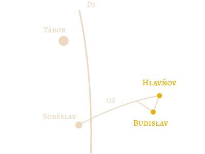

12 h
kostel Nanebevzetí Panny Marie
Budislav v jižních Čechách
13.30 h
Hlavňov u Budislavi
Všichni jsou zváni na obřad i následnou oslavu, jejíž součástí je oběd.
Nocleh ve vlastním stanu. V případě nutnosti zajistíme ubytování v přilehlých usedlostech. Sdělte prosím do 5. června.
Doprava autem z Prahy 75 min. Pokud nemáte možnost dopravit se autem, odvoz vám domluvíme.
Největším darem je samozřejmě vaše účast, ale budeme vděční i za finanční příspěvek na svatební cestu.